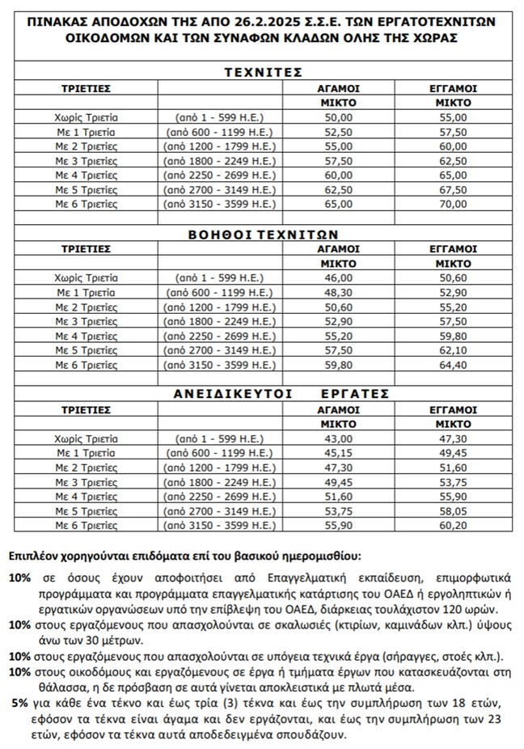

* Χρησιμοποιήστε τον παρακάτω επίσημο πίνακα για να βρείτε το σωστό νόμιμο ημερομίσθιο βάσει προϋπηρεσίας/τριετιών και να το εισάγετε στον υπολογιστή.

| Κατηγορία Ασφαλισμένου | Αριθμός Ενσήμων | Ημερομίσθιο (€) | Αποδοχές (€) | Εισφορές Ασφαλισμένου (€) | Εισφορές Εργοδότη (€) | ΣΥΝΟΛΟ (€) | Πακέτο Κάλυψης |
|---|---|---|---|---|---|---|---|
| ΠΑΛΑΙΟΙ ΑΣΦΑΛΙΣΜΕΝΟΙ 1 | 53.00 | 8.91 | 30.44 | 39.35 | 781 | ||
| ΝΕΟΙ ΑΣΦΑΛΙΣΜΕΝΟΙ 1 | 35.00 | 4.40 | 18.46 | 22.86 | 1144 | ||
| ΣΥΝΤΑΞΙΟΥΧΟΙ 1 | 58.00 | 5.80 | 0.00 | 5.80 | 2694 |
Πακέτο 781 (Παλαιοί):
Ασφαλισμένος: 16.82% | Εργοδότης: 57.427%
Πακέτο 1144 (Νέοι):
Ασφαλισμένος: 12.57% | Εργοδότης: 52.737%
Πακέτο 2694 (Συνταξιούχοι):
Ασφαλισμένος: 10.00% | Εργοδότης: 0.00%
Όπως αναφέρει η Εγκύκλιος 38, για τους συνταξιούχους υποβάλλονται 2 ΑΠΔ ταυτόχρονα. Ο παραπάνω πίνακας υπολογίζει τη 2η ΑΠΔ (Πακέτο 2694) με εισφορές μόνο ασφαλισμένου = 10% επί των αποδοχών.